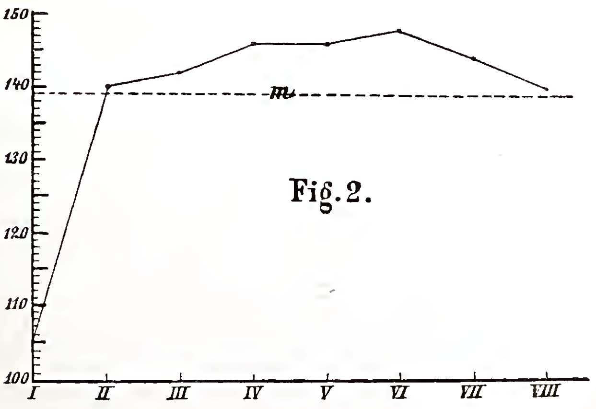
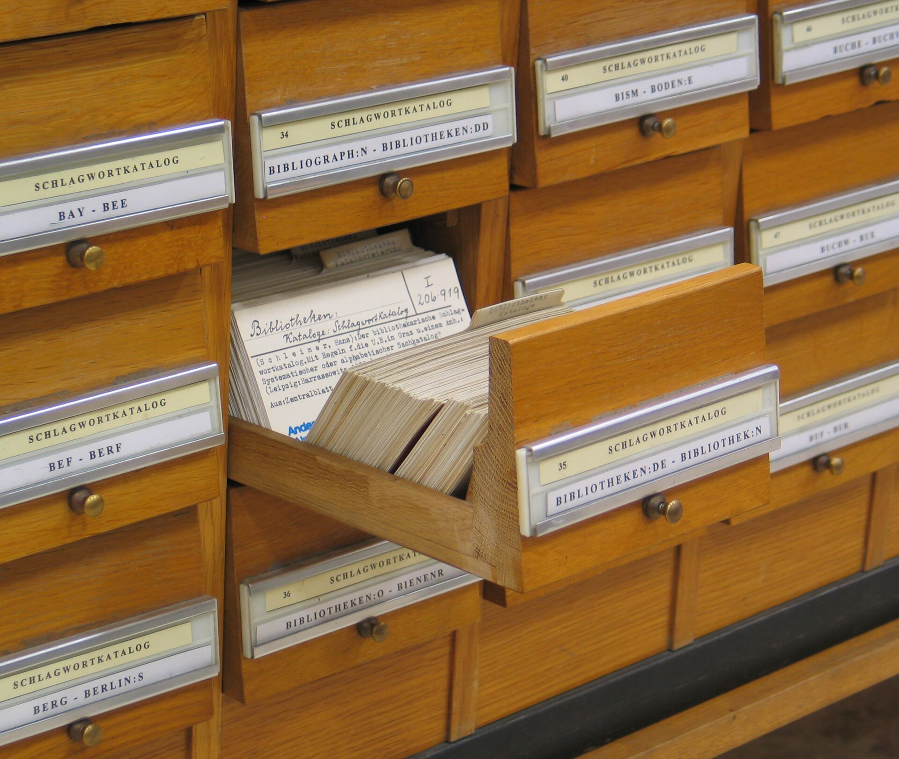
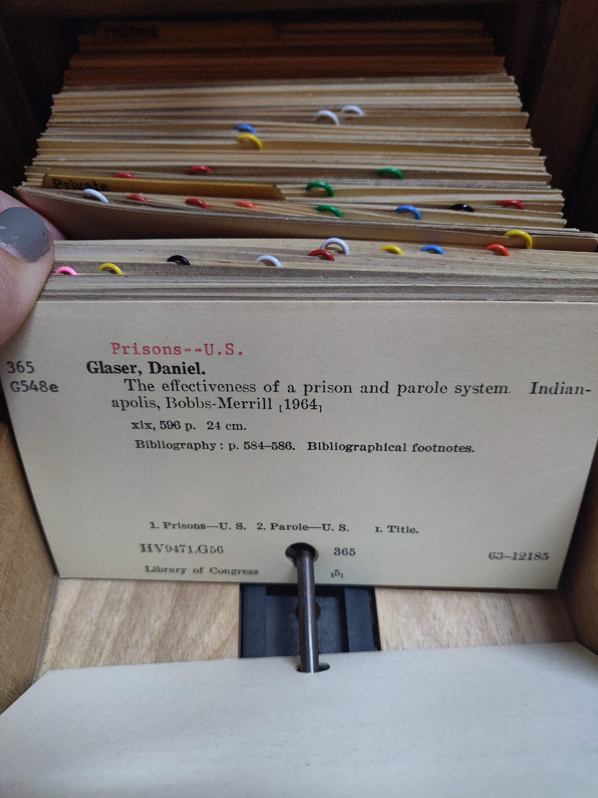

Free
- Three notebooks
- Revision cards
- Works offline
£0
Tallbook turns what you write in lectures into revision cards, and links each idea to where it came up before.
Free for three notebooks. No card needed.
Algorithms / Week 6
Week 6 · Algorithms
Recursioncard
A function that calls itself on a smaller version of the problem.
Needs a base case, or it never stops.card
Base casecard
The input small enough to answer directly.
3 cards from this page
Today / 4 of 12
Algorithms · Week 6
Front
What is recursion?
Today / 4 of 12
Algorithms · Week 6
Back
A function that calls itself on a smaller version of the problem.
Also came up in
C++ · Week 3, last term
“Recursive functions: factorial, then a base case”

Plain text, headings and quick lists. No templates to fill in.
Each heading and each definition becomes a card with the question on the front.
Cards come back the day before you'd forget them, not all at once in exam week.
Three cards from five lines. You wrote nothing extra.

recursion 3 places
£0
£3
a month
Try Student free for 14 daysCancel any time from settings. Your notes stay yours and export as plain text.

Do I have to change how I take notes? No. Write the way you already do. Headings and "X is Y" sentences make the best cards.
Can I bring my old notes? Yes. Paste them in or import Markdown and Word files, and Tallbook makes cards from those too.
What happens to my notes if I stop paying? You keep all of them. You go back to three active notebooks, and the rest become read-only.
Does it work for maths? Yes, with LaTeX in notes and on cards.